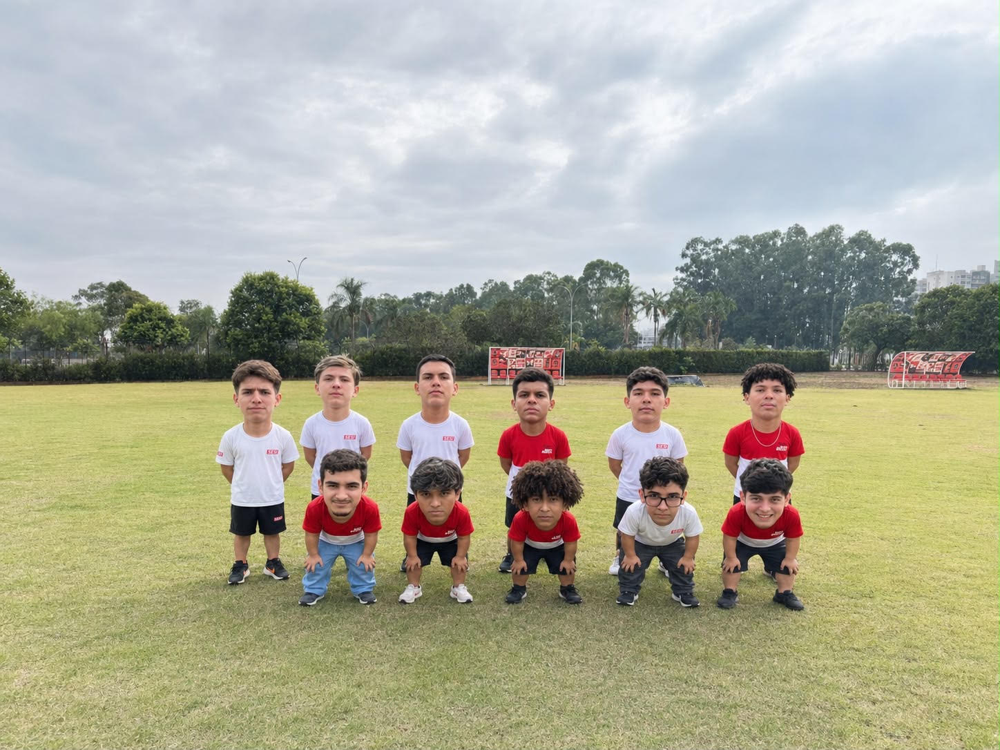

O último homem da defesa e o primeiro a acreditar na vitória. Hero Victor é aquele goleiro que não se intimida com pressão e está sempre pronto para fazer a defesa que salva o time. Quando a bola vem, é hora de mostrar quem manda na área.
Velocidade, habilidade e vontade de partir pra cima. Arthur é o jogador que gosta de encarar a marcação e buscar espaço pelas laterais. Se tiver campo para correr, pode esperar que ele vai aproveitar.
O homem responsável por transformar oportunidade em gol. V.A joga sempre de olho na área e sabe que centroavante vive de bola na rede. Pode passar o jogo inteiro quieto, mas basta uma chance para deixar sua marca.
O cérebro do meio-campo. Alencar consegue ajudar tanto na marcação quanto na criação das jogadas. É aquele jogador que faz o trabalho pesado e aparece quando o time mais precisa de alguém para organizar a casa.
O paredão da defesa. Julio não está ali para fazer amizade com os atacantes adversários. Forte na marcação e sempre disposto a proteger o gol, é um dos responsáveis por fazer a vida dos atacantes virar um inferno.
Se o time precisar de um goleiro, ele vai. Se precisar de zagueiro, ele também vai. Balofo é o famoso coringa do Al-Mossar, capaz de aparecer onde ninguém esperava. Famoso dentro do elenco e sempre pronto para assumir qualquer missão.
O comandante do Al-Mossar. The Man é quem pensa nas estratégias, organiza o time e tenta transformar um grupo de jogadores em uma verdadeira equipe. Dentro e fora de campo, é ele quem dá as ordens — pelo menos quando os jogadores deixam.
Sola é aquele ponta que vive procurando espaço para atacar. Com velocidade e disposição, está sempre pronto para receber a bola e causar problemas para a defesa adversária. Deixou espaço? Sola aparece.
Versatilidade é a palavra que define Gregorio. Pode jogar na defesa ou avançar para ajudar no meio-campo. É o tipo de jogador que não precisa aparecer toda hora, mas que faz muita diferença quando está em campo.
Landgraf é velocidade e agressividade no ataque. Pela ponta, busca espaço, encara os defensores e tenta levar perigo a cada jogada. Quando recebe a bola no corredor, a defesa já sabe que vem problema.
Andrade é outro jogador importante para equilibrar o time. Atua entre a defesa e o ataque, ajudando na marcação e também na construção das jogadas. Um verdadeiro jogador de meio-campo, daqueles que fazem o time funcionar.